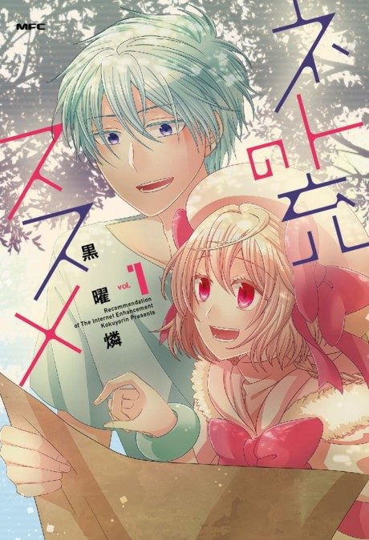
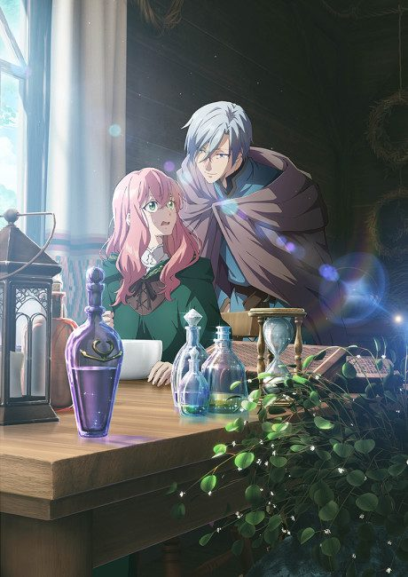
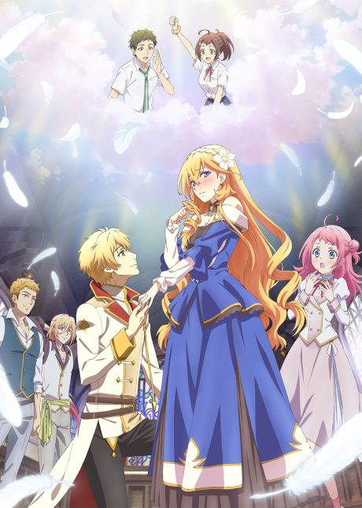

Anime
Anime
Manga2017 · Comedy, Fantasy, Romance
Recovery of an MMO Junkie
ネト充のススメ
AniList7.3
Animeter—
Episodes10 ep
MangaDone
Watch order
In airing order. Episode numbers on this site count straight through every season, so season 2 starts at episode —.
1
2017 · TV
Recovery of an MMO Junkie
Episodes1–1010 ep
Films, OVAs and specials
Not counted in the episode numbers above.
·
2017 · OVA
Recovery of an MMO Junkie OVA
Sources: AniList
More like Recovery of an MMO Junkie



